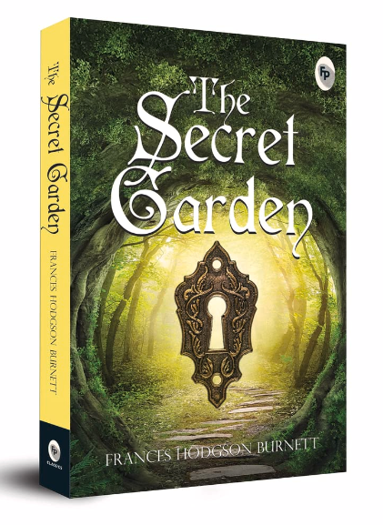
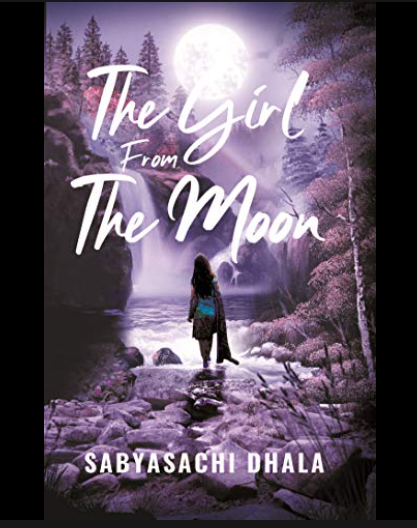
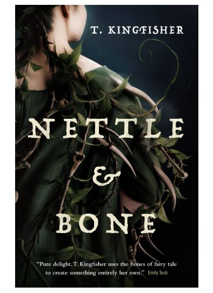

1. THE SECRET GARDEN
Enter the enchanting world of Frances Hodgson Burnett's timeless classic, The Secret Garden. Follow young Mary Lennox as she
discovers a hidden paradise, filled with wonders and secrets waiting to be unlocked. This edition captures the magic and beauty
of the garden's transformative power.Captivating edition of Frances Hodgson Burnett's beloved classic, The Secret Garden.Join
Mary on her journey of discovery and transformation. Experience the magic of a hidden garden and its profound impact on lives.
Perfect for readers of all ages, from children to adultscherished addition to any book collection, inspiring hope and the joy of
nature.
ABOUT THE AUTHOR:
Born in Cheetham, Manchester, England, Frances Hodgson Burnett (1849-1924) developed her love for reading at a very young age.
In 1868, Burnett’s first story was published in Godey’s Lady’s Book. She had begun writing for a livelihood and wrote non-stop.
Her stories were being published on a regular basis in Peterson’s Magazine, Harper’s Bazaar and Scribner’s Monthly. That Lass
o’ Lowrie’s, her first full-length novel, was published in 1877. She started writing children’s fiction after meeting Louisa
May Alcott and Mary Mapes Dodge—the editor of St. Nicholas, a children’s magazine.
To shop

2. THE GIRL FROM THE MOON
Ranjan was rich, a town boy, from a well established business family. But true to his heart. Charu was poor, a village girl. But
an angel. He fell in love with Charu deeply. But their casts were different. Their society was not only the barrier but their
families too. They wanted to get married. But the whole universe stood against them. So they searched out a solution. A different
and unique solution that no one had ever done before. Because she was The Girl from the Moon.The story is about a girl and boy
from different caste who love each other and wanted to marry each other. Once they fell into love with each other, their only
challenge was to overcome any hurdle which society or their family can make. How would they manage the situation, to know this,
read this awesome book.
ABOUT THE AUTHOR:
Sabyasachi Dhala, a simple and cool boy from Odisha who is presently a banker. He strongly believes in positive energy and draws
inspiration from nature. Apart from writing he enjoys painting. He lives in Angul in the state of Odisha.
To shop

3. NETTLE & BONE
Whimsical Tales, Gothic feels, a Found Family, a Dog that's not a Dog, a Hen with a Demon, Curses, Crypts, Ghosts, Godmothers and
a Vile Prince - Nettle and Bone gives you a combination of all of this and some more!We get a delightful mixture of characters in
this story.An ordinary forgotten princess who is really a Nun, a sweet, harmless Godmother, a Witch (of sorts), and a warrior
turned slave form an unlikely group to carry out an impossible task - destroy the Evil Prince.Faced against insurmountable odds
and an entire battalion of creepy, evil ghosts and the power of a centuries old curse, their mission seems like a mad venture.
But they persevere.Throughout the book, the author is trying to make a point that often times, people are not what they seem.
Cruelty can lie hidden under a veneer of respectability. And the one's towards whom we look with contempt and disgust might have
a wealth of kindness in them if we could just bother to treat them properly.
ABOUT THE AUTHOR:
T. Kingfisher is the vaguely absurd pen-name of Ursula Vernon, an author from North Carolina. In another life, she writes
children's books and weird comics. She has been nominated for the World Fantasy and the Eisner, and has won the Hugo, Sequoyah,
Nebula, Alfie, WSFA, Coyotl and Ursa Major awards, as well as a half-dozen Junior Library Guild selections.
To shop